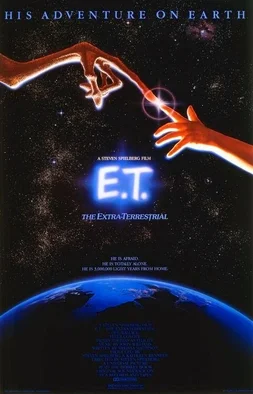

_(3x4_cropped).jpg){kind=link}

Explore film ↗E.T. the Extra-Terrestrial
Steven Spielberg
DIRECTOR PROFILE
Steven Allan Spielberg (; born December 18, 1946) is an American filmmaker.
LIFE & CAREER
Steven Allan Spielberg (; born December 18, 1946) is an American filmmaker. A major figure of the New Hollywood era and pioneer of the modern blockbuster, Spielberg is widely regarded as one of the greatest and most influential filmmakers in the history of cinema and is the highest-grossing film director of all time, with his films having earned almost $11 billion worldwide. Among other accolades, he has received three Academy Awards, four Golden Globe Awards, four BAFTA Awards, twelve Emmy Awards, a Tony Award, and a Grammy Award, as well as the AFI Life Achievement Award in 1995, an honorary knighthood in 2001, the Kennedy Center Honor in 2006, the Cecil B.
Adapted excerpt from Wikipedia, CC BY-SA 4.0. Pronunciation notes omitted.
Read the full biographyImage: Martin Kraft. Source & rights: CC BY-SA 4.0 ↗.
Profile reference: Director background ↗
Open this director checklist ↗
A selection of this director’s films available in the archive.

Explore film ↗Steven Spielberg
 Explore film ↗
Explore film ↗Steven Spielberg
Steven Spielberg
Steven Spielberg
 Explore film ↗
Explore film ↗Steven Spielberg
 Explore film ↗
Explore film ↗Steven Spielberg